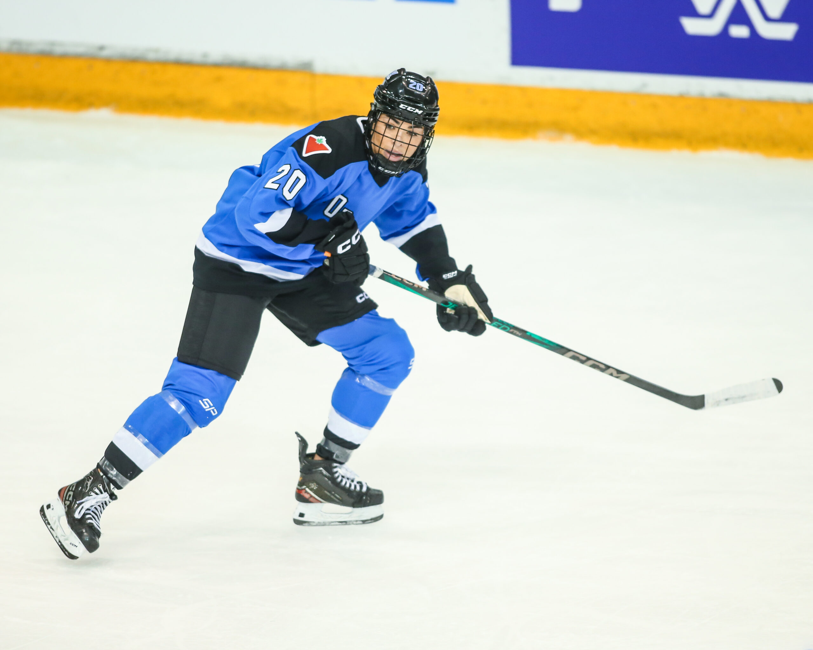
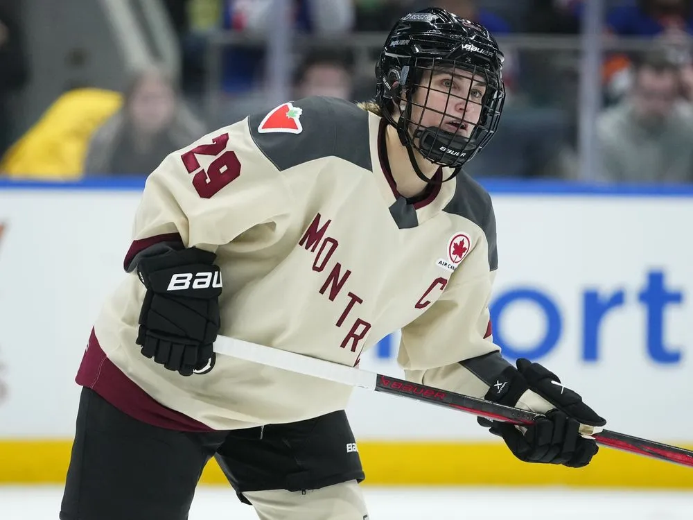
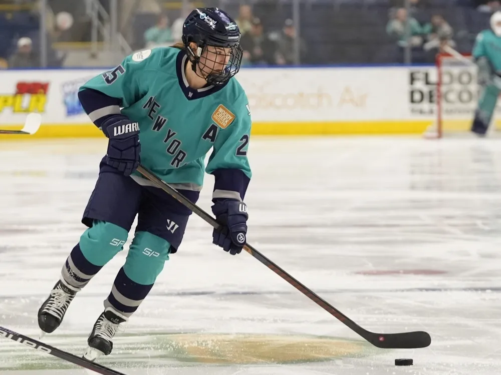
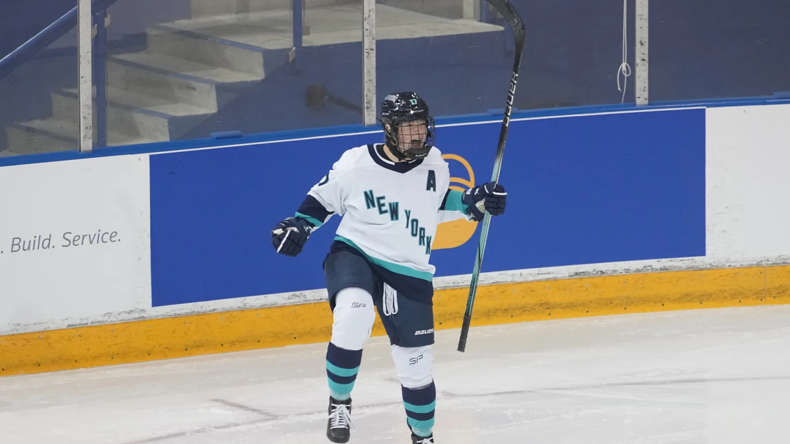

Predictions for the 2024-25 season based on the inaugural season.
The PWHL has 6 teams, and has just started their second season.
Let's look at the leaderboard from last season.
Credit: Mark Blinch
Ranked #1 was Natalie Spooner. Spooner is a forward for the Toronto Sceptres. She was first ranked following the 2023-24 season with 20 goals and 7 assists across 24 games, which was the total amount of games per team in the league's inaugural season. She had a plus/minus rating of +11, which means she contributed to eleven more goals on the ice than were scored against her team while she was playing. At 33 years old, Natalie Spooner is one of the oldest players in the PWHL, however she contributed heavily to the team, who finished the regular season ranked first, but did not make it to the national championship.
This chart shows Spooner's stats from last season. She should perform relatively similar this year, however she will be out for the start of the season as she is recovering from ACL surgery, and according to Meghan Lipscomb, hockey reporter for Montclair State University, Spooner's return to play doesn't have a timeline yet. Due to this change, I would predict she will not be in the top 5 players in this 2024-25 season because she will have less of an opportunity to match her goal, assist, and other stats across fewer games.
new rank: unranked
Ranked #2 was Sarah Nurse. Nurse is also a forward for the Toronto Sceptres along with Spooner. She was second ranked following the 2023-24 season with 11 goals and 12 assists across all 24 games. She had a plus/minus rating of +6. Some of these stats are a wide jump from Spooner at #1, which makes it even more obvious how impressive these players are. Like Spooner, Nurse contributed a lot to the team's offense, and finished the regular season ranked first, but did not make it to the national championship.
 Credit: Alex D'Addese
This chart shows Nurse's stats from last season. She should perform relatively similar this year, she will have to produce for the Sceptres a little more while Spooner is out at the beginning of the season. Due to this change in pressure, I would predict she will finish this 2024-25 season ranked first.
new rank: first
Credit: Frank Franklin II
Ranked #3 was Marie-Philip Poulin. Poulin is a forward for the Montreal Victoire. She was third ranked following the 2023-24 season with 10 goals and 13 assists, but only played 21 games of the season. She had a plus/minus rating of +8. These stats are very similar to Sarah Nurse, who ranked one place higher than Poulin. The reason for Poulin to fall behind Nurse is because she did not play in 3 games of the season. Poulin was a fierce competitor on the ice, and the Victoire ended the regular season seeded second in the playoffs, but did not make it past the semi-final round of post-season play.
This chart shows Poulin's stats from last season. She should perform relatively similar this year, and I believe she will finish, again, right under Sarah Nurse. Therefore, I would predict she will finish this 2024-25 season ranked second.
new rank: second
Ranked #4 was Alex Carpenter. Carpenter is a forward for the New York Sirens. She was third ranked following the 2023-24 season with 8 goals and 15 assists, and played in every game of the season. She had a plus/minus rating of -8, which means when Carpenter was on the ice, the Sirens were scored on 8 times more than they scored. As you can see from her stats, Carpenter was a producer, but more for assists. She was surrounded by many talented players at the Sirens, but the New York team did not make it to the post-season.
Credit: Frank Franklin II
This chart shows Carpenter's stats from last season. She could have a similar season this year, however the New York Siren have added a huge asset to their roster this season in Sarah Fillier from Princeton University. According to Meghan Lipscomb, Fillier is entering the league with a huge reputation and will surely have a huge impact on the PWHL during her rookie season. Because of this, I believe Carpenter might drop in the rankings because there is a not a need for her to produce as much when it comes to points and such. Conclusively, I believe Sarah Carpenter will finish ranked fifth at most.
new rank: fifth
Credit: John E. Sokolowski
Ranked #5 was Ella Shelton. Shelton is a defenseman for the New York Sirens, and the only defenseman in the top 5. She was fifth ranked following the 2023-24 season with 7 goals and 14 assists, across all 24 games, which are phenomenal numbers for a defenseman. She had a plus/minus rating of -6, which is unfortunate because she is a defensive player. The Sirens did not make it into the post-season.
This chart shows Shelton's stats from last season. She should perform relatively similar this year, maybe with fewer goals because of the strength her team picked up in the off season. Because she is a defenseman, and her team has a fantastic new rookie in the aforementioned Sarah Fillier, I predict Ella Shelton will not finish the 2024-25 season ranked in the top 5.
new rank: unranked
These predictions leave room for 2 new players to enter the top 5, and it will surely be an interesting 2024-25 season in the PWHL. With fresh blood in a new rookie class, as well as a season extension from 24 to 30 games. Meghan Lipscomb has some predictions as to which players will be in the top five following this season, including last year's 12th ranked Daryl Watts from the Toronto Sceptres, or perhaps Emma Maltais, eigth ranked forward also from Toronto, who tied Carpenter for most assists last season, 15.
The season's puck drop was December 1st. And Alex Carpenter has already racked up 3 goals and 2 assists in her first 3 games of the season. Sarah Nurse has 2 goals and 1 assist across 3 games. Ella Shelton has 1 assist and played in 1 game so far. Marie-Philip Poulin has 1 goal in 3 games. And finally, Spooner has no points or playing time so far this season.
 Credit: Mark Blinch
Credit: Mark Blinch